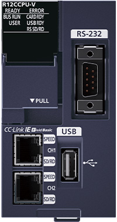
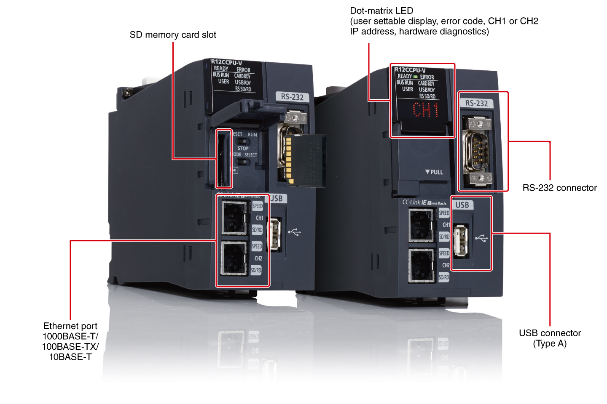
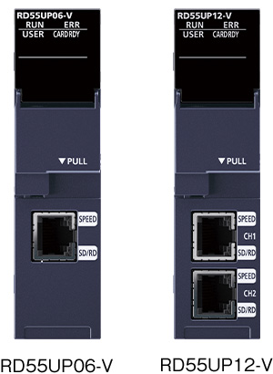
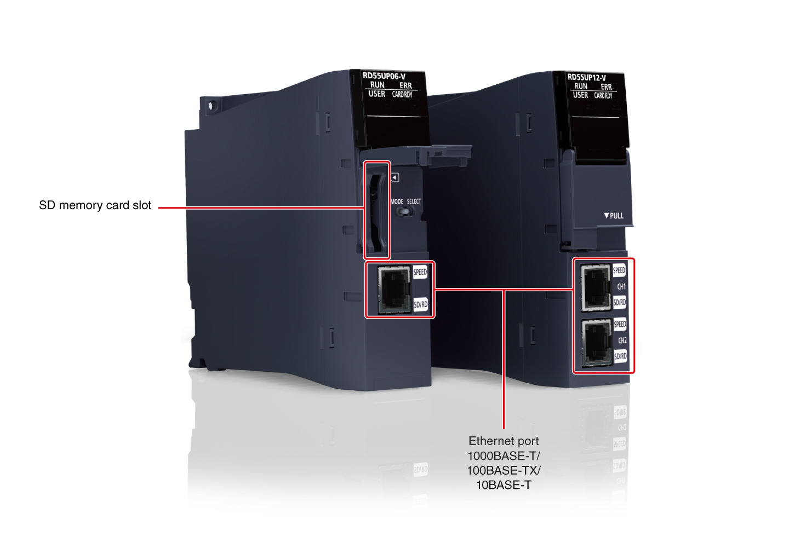
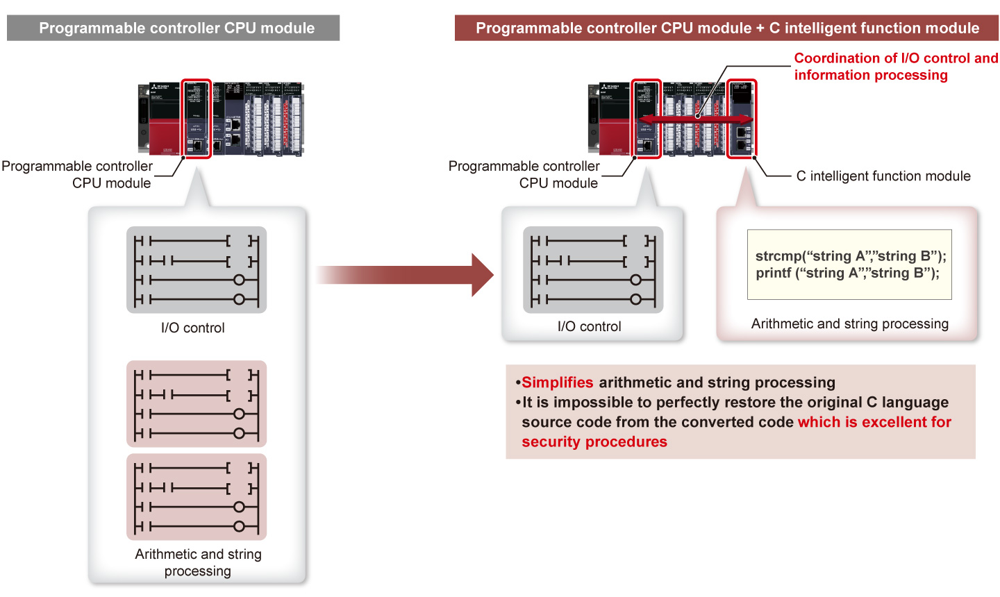
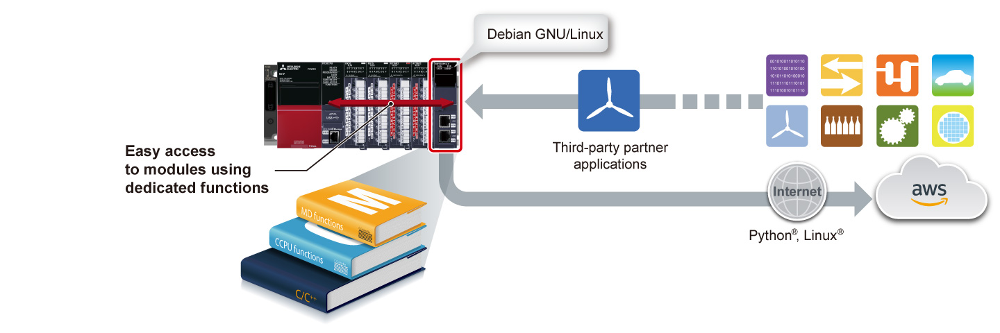
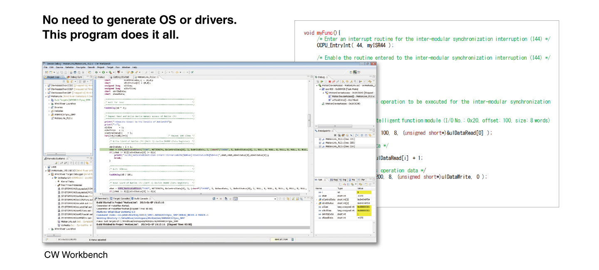

Controllers MELSEC iQ-R Series Fitur Produk -CPU-

Modul Pengontrol C, modul fungsi cerdas C
Modul Pengontrol C dan modul fungsi cerdas C adalah pengontrol platform terbuka yang dapat menjalankan program C/C++, berdasarkan arsitektur sistem MELSEC, dan memanfaatkan pasokan stabil jangka panjang, ketersediaan tinggi, fungsionalitas tingkat lanjut, dan fitur fleksibel.
Pemrosesan kompleks berkecepatan tinggi yang tidak mungkin dilakukan dengan program ladder dicapai saat menjalankan manajemen modul MELSEC iQ-R Series dan kontrol I/O dalam program C/C++.
Modul Pengontrol C

RAM: 256 MB
- Kontrol waktu nyata
Tertanam dengan VxWorks®, Pengontrol C mewujudkan kontrol waktu nyata yang mungkin tidak mungkin dilakukan dengan OS serbaguna. - Pemrosesan berkecepatan tinggi
Pemrograman berbasis bahasa C (C/C++) mewujudkan pemrosesan berkecepatan tinggi. - Konfigurasi sistem yang lebih mudah
Modul dapat segera digunakan karena fungsi khusus Pengontrol C telah terinstal sebelumnya.
Modul Pengontrol C<sup>Antarmuka</sup>

Modul fungsi cerdas C

- Kontrol terdistribusi dengan modul CPU
Pemrosesan kontrol dilakukan dalam modul CPU pengontrol terprogram dan pemrosesan informasi dalam modul fungsi cerdas C, sehingga mengurangi waktu pemrosesan secara keseluruhan. - Memperluas fungsi fasilitas yang ada
Penerapan fungsi seperti operasi kompleks dan konversi protokol sesuai dengan sistem saat ini dimungkinkan. - Mendukung beberapa sistem operasi
VxWorks® yang meningkatkan akurasi analisis data telah terinstal sebelumnya dan Linux® yang menjalankan Python® dan sejenisnya digunakan untuk pembelajaran mesin dapat diinstal.*1
- *1.Produk ini sudah terinstal dengan VxWorks®. Sedangkan untuk Linux®, gambar OS perlu diunduh secara terpisah.
Modul fungsi cerdas C<sup>Antarmuka</sup>

Fitur<sup>Pemrosesan informasi yang merepotkan menjadi mudah di C/C++</sup>
- Program C/C++
- Pemrograman yang mudah
- Perlindungan cerdas
- Pemrosesan informasi yang merepotkan (aritmatika kompleks dan pemrosesan string) jauh lebih mudah dalam program C/C++ daripada diimplementasikan dalam bentuk ladder
- Kekayaan intelektual disederhanakan dengan memisahkannya dari program ladder menggunakan modul C Controller atau modul fungsi cerdas C, mencegah kebocoran teknologi proprietary

Pengembangan yang lebih mudah dengan memanfaatkan fungsi khusus dan aplikasi mitra
- Fungsi dan pustaka khusus
- Aplikasi mitra
- Debian GNU/Linux
- Akses modul dengan mudah menggunakan fungsi khusus dan pustaka komunikasi. Selain itu, dengan memanfaatkan aplikasi mitra yang mendukung berbagai fitur peralatan manufaktur, berbagai sistem dapat dikonfigurasikan
- Modul fungsi cerdas C menggunakan Debian GNU/Linux yang memungkinkan mesin memanfaatkan teknologi pemrosesan data terbaru yang dikembangkan oleh komunitas, membantu mengurangi waktu pengembangan
- Fitur-fitur utama seperti operasi jarak jauh, pemeliharaan prediktif, dan pemeliharaan mesin jarak jauh dapat dengan mudah diimplementasikan dalam modul fungsi cerdas C melalui koneksi dengan layanan cloud pihak ketiga

Pengaturan parameter yang mudah, diagnostik, pemantauan, dan pengujian di lingkungan pengembangan khususR12CCPU-V
- Pengaturan yang mudah
- Diagnostik yang mudah
- Konfigurator CW memungkinkan pengaturan parameter, diagnostik modul, pemantauan, dan pengujian berbagai modul MELSEC iQ-R/Q Series termasuk modul Pengontrol C
- Menggunakan Konfigurator CW semudah menggunakan perangkat lunak rekayasa GX Works3, yang memiliki antarmuka serupa

Pengembangan aplikasi dalam langkah-langkah sederhana
- Pemrograman mudah
- Simulasi tanpa perangkat keras
- Pengembangan aplikasi dengan modul C Controller mudah karena tidak memerlukan pengembangan driver tambahan, sehingga menyediakan lingkungan pengembangan tertanam skala penuh dengan biaya yang relatif rendah
- CW Workbench memungkinkan pemrograman dalam C/C++
- CW-Sim/CW-Sim Standalone memungkinkan simulasi VxWorks® tanpa memerlukan perangkat keras apa pun

Spesifikasi
Spesifikasi modul pengontrol C
| Item | R12CCPU-V |
|---|---|
| Hardware | |
| MPU | Arm® Cortex®-A9 Dual Core |
| RAM (byte) | 256M |
| ROM (byte) | 16M |
| Backup RAM (byte) | 4096K (file storage area of device/label memory: 3584 KB, for system: 512 KB) |
| Perangkat Lunak | |
| OS | VxWorks® Version 6.9*2 |
| Programming language | C/C++ |
| Programming development environment | CW Workbench/Wind River® Workbench 3.3*2 |
| C Controller module setting/monitoring tool | CW Configurator (SW1DND-RCCPU) |
| Communication interface | |
| USB | ● |
| Ethernet(1000BASE-T/100BASE-TX/10BASE-T) (ch) | 2 |
| RS-232 (9600…115200 bps) (ch) | 1 |
| SD memory card slot | ● |
- *2.VxWorks® 6.9 and Wind River® Workbench 3.3 are products of Wind River Systems, Inc. in the United States.
For any inquiries on products of Wind River Systems, Inc. in the United States, please refer to the manuals of Wind River Systems products or contact Wind River Systems, Inc. in Japan.
Please visit the website below.
www.windriver.com
Spesifikasi modul fungsi cerdas C
| Item | RD55UP06-V | RD55UP12-V | |
|---|---|---|---|
| Hardware | |||
| MPU | Arm® Cortex®-A9 Dual Core | ||
| RAM (byte) | 128M | 1G | |
| ROM (byte) | 12M | ||
| Perangkat Lunak | |||
| OS | VxWorks® Version 6.9 (installed by default)*3/Debian GNU/Linux | ||
| Programming language | C/C++ | ||
| Programming development environment | VxWorks® Version 6.9 | CW Workbench/Wind River® Workbench 3.3*3 | |
| Debian GNU/Linux | TimeStorm®/Visual Studio® | ||
| Setting/monitoring tool | GX Works3 (SW1DND-GXW3-E)*4 | ||
| Communication interface | |||
| Ethernet (1000BASE-T/100BASE-TX/10BASE-T) (ch) |
1 | 2 | |
| SD memory card slot | ● | ||
- *3.VxWorks® 6.9 dan Wind River® Workbench 3.3 merupakan produk Wind River Systems, Inc. di Amerika Serikat.
Untuk pertanyaan apa pun tentang produk Wind River Systems, Inc. di Amerika Serikat, silakan rujuk manual produk Wind River Systems atau hubungi Wind River Systems, Inc. di Jepang.
Silakan kunjungi situs web di bawah ini.
www.windriver.com - *4.Pengaturan dan pemantauan modul terintegrasi dalam perangkat lunak rekayasa GX Works3.